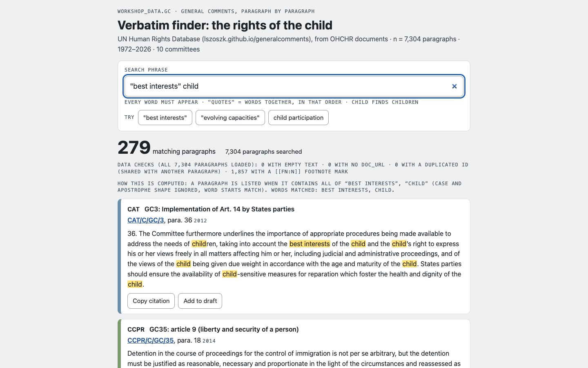

Same prompt, different models
Run cards-2. Country: Kenya. Click a screenshot to open the app.
Claude Sonnet 5.5 · USA · Amazon Bedrock
g1-verbatim

6/6 · None s · $0.000 · 331 lines
all checks passed